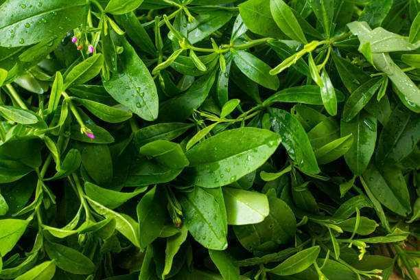
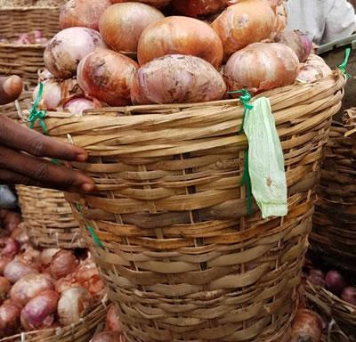

OUR PRODUCTS
Fresh Vegetables Available
Amazing Farms supplies a wide range of freshly harvested vegetables for homes, restaurants, supermarkets, hotels and wholesale buyers.

Fresh Tomatoes
Ripe, juicy and carefully harvested for maximum freshness.

Fresh Pepper
Premium peppers with rich flavour for every kitchen.

Ugu Leaves
Fresh pumpkin leaves packed with vitamins and nutrients.

Waterleaf
Tender, healthy waterleaf harvested daily from our farm.

Spinach
Fresh green spinach suitable for homes and restaurants.

Fresh Okra
Carefully selected okra with excellent freshness and quality.

Cucumber
Crisp, refreshing cucumbers grown under healthy conditions.

Fresh Onions
Quality onions carefully sourced and supplied fresh.